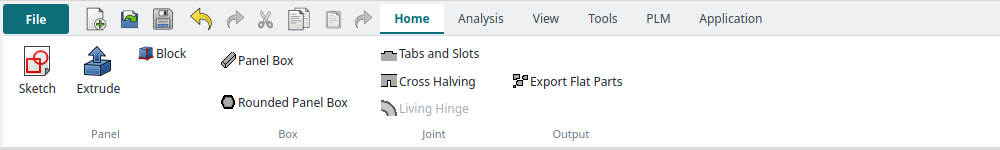

Tutorial AD: A laser-cut tray with tabs and slots
| Source |
The LCInterlocking add-on’s own workflow (its interlocking and export guides). NX has no laser-cut application, and the tray is ours |
| You learn |
Application › Laser Cut, panels as Part solids, Tabs and Slots, the kerf, Export Flat Parts, an SVG for the cutter |
| Sizes |
3 mm sheet; a 120 × 80 base; two 120 × 40 long walls on it; two short walls (74 × 40) between them |
Step by step
1. The Laser Cut application
Ctrl+N, then Application › Laser Cut. The Home tab has the add-on’s commands under NX-style names (Laser Cut).

2. Five panels
Click Block five times and type each block’s size and position into its properties:
| Panel | Length × Width × Height | Position |
|---|---|---|
Base |
120 × 80 × 3 |
0, 0, 0 |
Front |
120 × 3 × 40 |
0, 0, 3 |
Back |
120 × 3 × 40 |
0, 77, 3 |
Left |
3 × 74 × 40 |
0, 3, 3 |
Right |
3 × 74 × 40 |
117, 3, 3 |
The walls stand on the base, and the short walls sit between the long ones. The add-on works best with Part solids such as these. It ignores a PartDesign Body’s own placement, so a moved Body would be joined in the wrong place.
3. Tabs and Slots
Tabs and Slots. In its task panel, select the five panels and click Add parts. Each panel is found to be 3 mm thick.
Then select the eight faces where a panel meets another: the bottom face of each wall, and both end faces of each short wall. Choose Tab and click Add faces. Each face gets one 10 mm tab (the panel’s default), and the panel it touches gets the slot.
The replay
| # | In the book (NX) | In FreeCAD NX-Style | Result | Notes |
|---|---|---|---|---|
AD1 |
File > New (Ctrl+N) |
Ctrl+N |
same |
new document ['Unnamed'] |
AD2 |
Application > Laser Cut |
ribbon 'Application > Laser Cut' |
differs |
application laser_cut; tabs ['Home', 'Analysis', 'View', 'Tools', 'PLM', 'Application']; commands not found none. NX has no laser-cut application: NX-Style adds one on the LCInterlocking add-on (bundled), with Panel Box, Tabs and Slots, Cross Halving, Living Hinge and Export Flat Parts |
AD3 |
Five 3 mm panels: a 120 x 80 base, two 120 x 40 long walls, two short walls between them |
ribbon 'Home > Panel > Block' five times; sizes and positions typed into the properties |
differs |
5 Part solids ['Back', 'Base', 'Front', 'Left', 'Right']. FreeCAD’s Block makes a 10 mm cube to edit, NX’s asks for the sizes first. Part solids: LCInterlocking ignores a moved PartDesign Body’s placement |
AD4 |
Tabs and Slots: select the five panels, Add parts |
ribbon 'Home > Joint > Tabs and Slots', the panels picked, the panel’s 'Add parts' button |
differs |
5 parts, thickness found [3.0] mm. The add-on’s own task panel (its names: Add parts, Add faces); it reads each panel’s thickness from its two largest faces |
AD5 |
The eight faces where panels meet: Add faces, type Tab |
the four walls' bottom faces and the short walls' four ends picked, 'Tab', 'Add faces' |
differs |
8 tab joints; one 10 mm tab per face (the panel’s default). The face picked is the tab’s side; the panel it touches gets the slot |
AD6 |
OK: the panels with their tabs and slots |
MB2 = OK |
same |
5 parts, each one solid: True; volume 75360.0 → 75374.5 mm^3 (tabs add what the slots remove, plus the kerf allowance); parts overlap by 27.85 mm^3 in all, the kerf allowance of the tabs. The originals are kept, hidden, in a group |
AD7 |
Export Flat Parts: the parts laid flat, side by side, with their outlines |
the joined parts selected, ribbon 'Home > Output > Export Flat Parts' |
differs |
new document ['export_shape']: 5 parts, each 3 mm thick and lying flat: True; none overlapping: True; 5 2D outlines (Draft Shape2DView). NX would flatten each body and export its face; the add-on does all of them at once |
AD8 |
Export the outlines for the laser cutter (File > Export) |
the outlines exported as SVG (FreeCAD’s importSVG, what File > Export > SVG runs) |
differs |
Tray_flat.svg: 108 paths for 5 outlines, 28612 bytes. NX writes DXF from File > Export; FreeCAD writes DXF the same way, SVG needs no extra library |
| Result | Means |
|---|---|
same |
The book’s NX steps work as written. |
differs |
It works, but the FreeCAD way is different; the notes say how. |
limit |
The book’s way fails in FreeCAD itself; a workaround follows in the next steps. |
missing |
FreeCAD has no such function; a stand-in follows. |
skipped |
Not replayed; the notes give the reason. |
FAILED |
Did not work. |
What differs from NX
-
NX has no laser-cut application. In NX the tabs and slots would be extrudes and subtracts on each body, and the flat parts would come from exporting each body’s face.
-
The replay types the panels' sizes into their properties. FreeCAD’s Block first makes a 10 mm cube, while NX’s Block asks for the sizes before it makes the block.